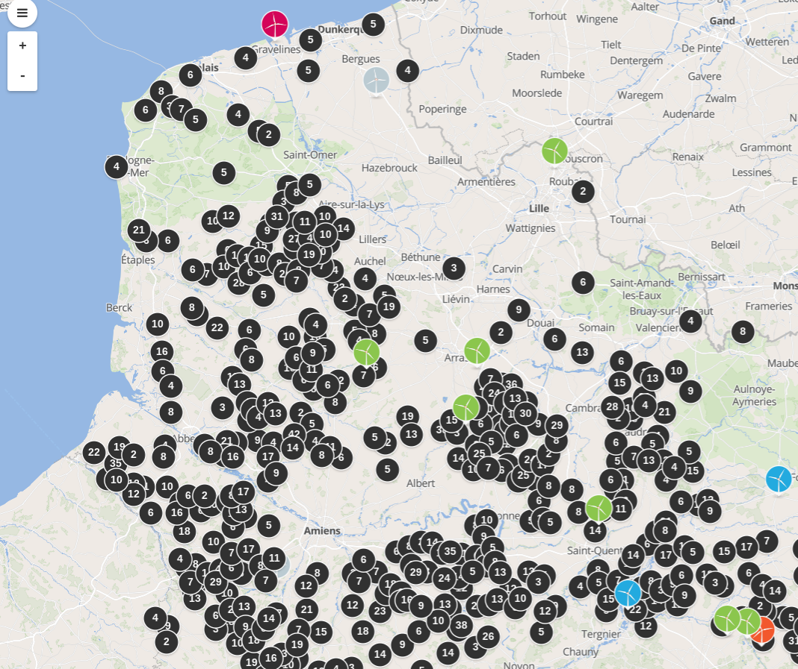
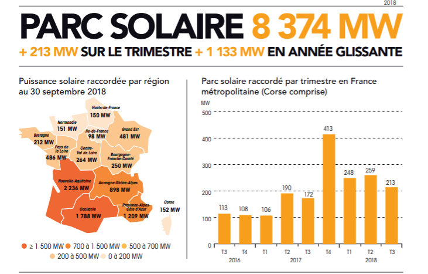
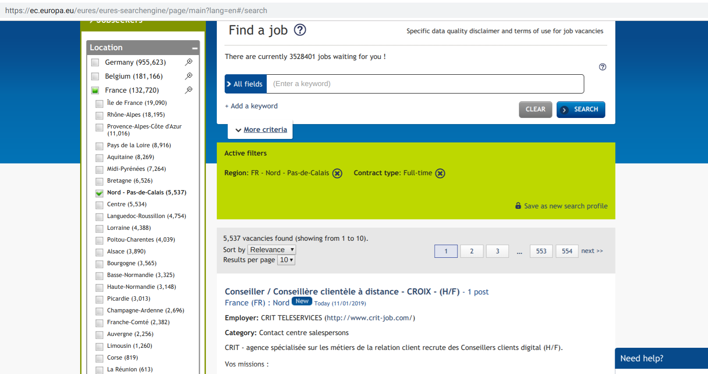
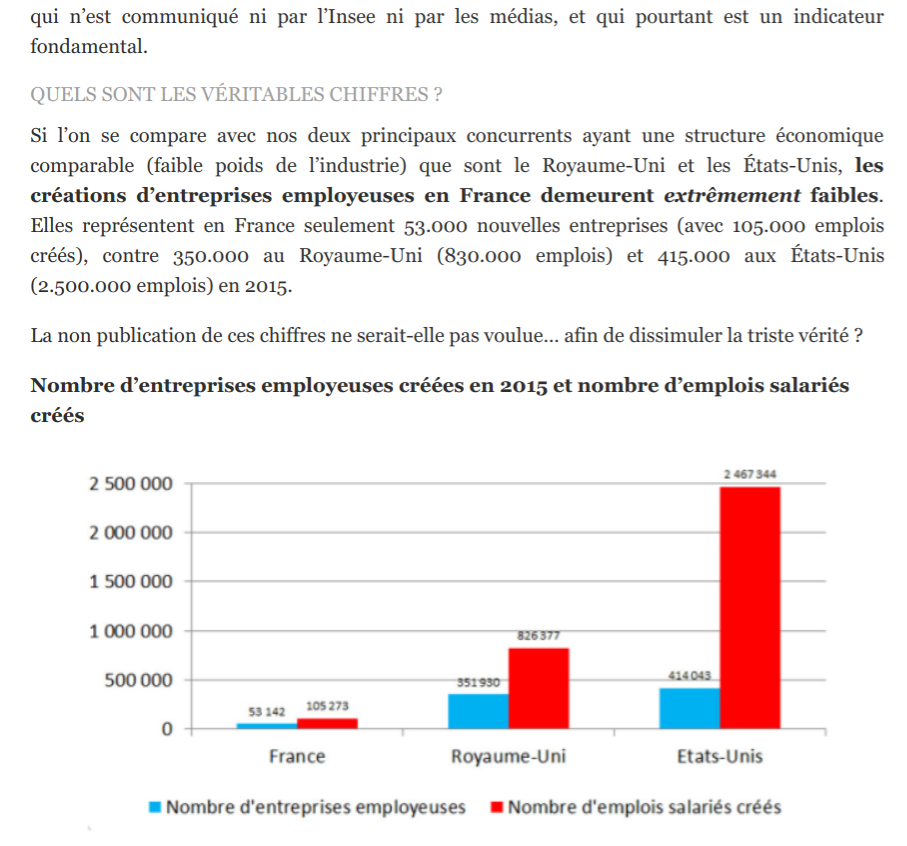
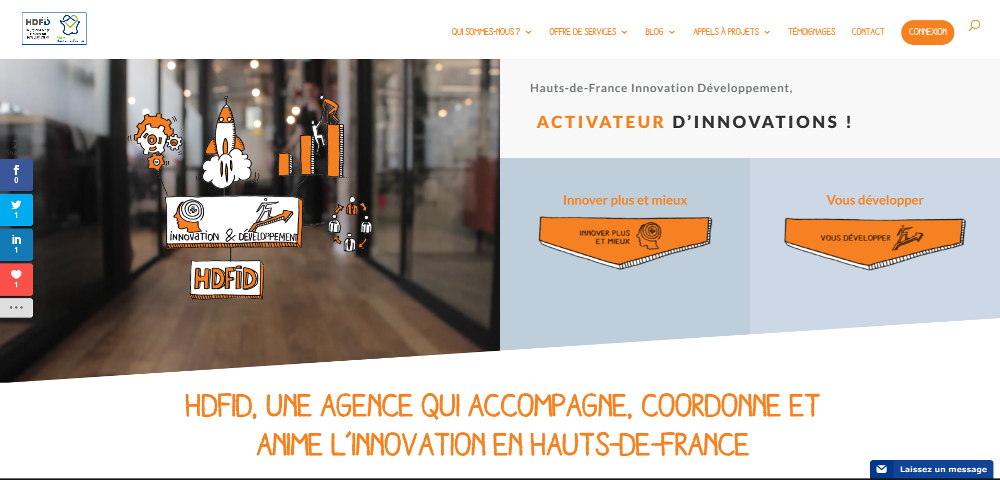
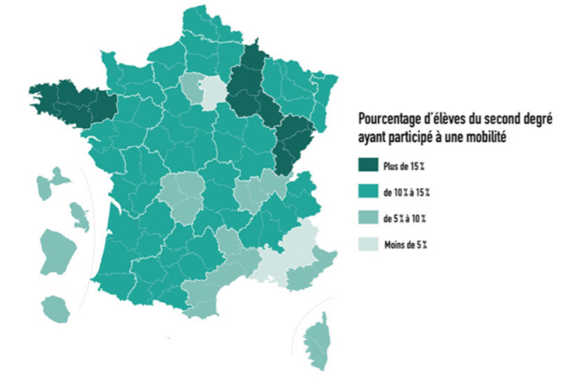
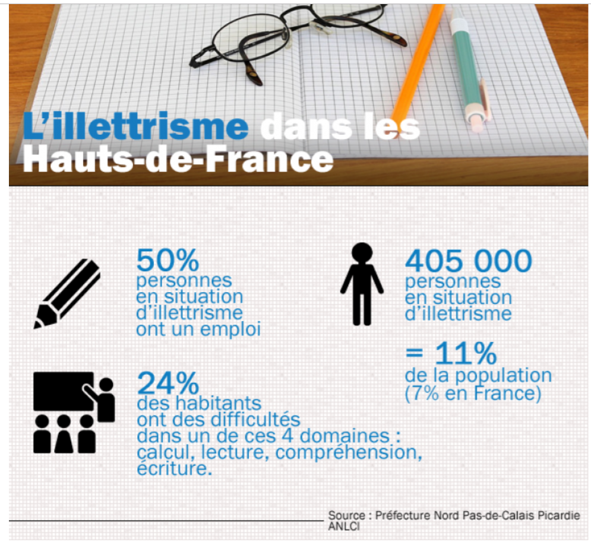
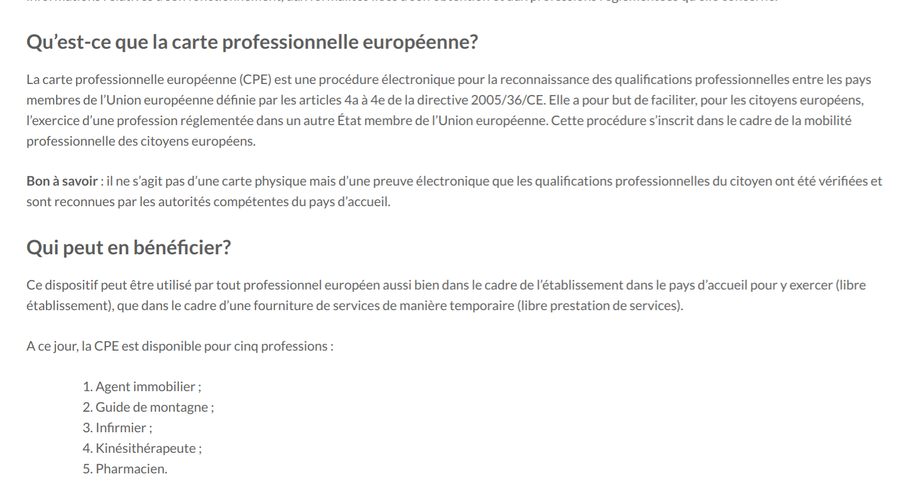

Volt... ?

- a été fondé après le vote du Brexit
- est un mouvement progressif et participatif de volontaires paneuropéens
- est actif dans 32 pays, avec des partis politiques dans treize d'entre eux
- est une plateforme qui veut permettre aux citoyennes à participer plus active à la politique
Plus de détail sur www.voltfrance.org/vision
Déclaration d'Amsterdam

- créé en collaboration des tous volontaires des pays européens qui ont voulu participer
- un projet sociétal à la fois visionnaire et réaliste
Trois parts:
- (1/3) Rénover l’Europe - union politique plus forte, pouvoir d'agir de ses citoyen, securité et responsabilitation
- (2/3) Faire de l’Europe un moteur économique - la croissance, l'investissment dans l'avenir, l'éducation
- (3/3) Bâtir une société juste et responsable - transition écologoique, immigration responsable et humaine, Œuvrant pour l’équité et l’égalité
Plus de détail sur www.voltfrance.org/vision.
A) Stimuler la Croissance
- Création d'Emploi
- L'Entrepeneuriat
- Aucun laissé pour compte
Création d'Emploi - Investissements Verts

 Réseau Transpol vis-a-vis Population
Réseau Transpol vis-a-vis Population

4659 Éoliennes dans HDF. Seulement 3 dans la MEL

150 MW dans HDF (8.374 MW en France, ~42.000 en Allemagne)
Citation des sources:
- Conseil de la Métropole Européene de Lille, 15 Décembre, 2017
- Nombre de seniors par carreau de 200 m au sein de la MEL (2013)
- Observatoire des éoliennes en Hauts-de-France
- HDF - Production d'energie Renouvelable
- Panorama de l’électricité renouvelable, 30 Septembre, 2018
- Croissance d'energie solaire dans le monde
Création d'Emploi - Formation professionnelle

 Chômage de 12.3% dans la Nord
Chômage de 12.3% dans la Nord
 Chômage de 21.8% dans les jeunes en France (fin 2018)
Chômage de 21.8% dans les jeunes en France (fin 2018)
Citation des sources
Création d'Emploi - Plateforme de l'emploi


budget annuel de 20m€, indicateurs de performance ? 47€/resume vis-a-vis ~7€/resume indeed.fr
Création d'Emploi - Compétence Numérique

 L'illectronisme - défi majeur à relever particulièrement dans HDF avec 11% d'illettrés
L'illectronisme - défi majeur à relever particulièrement dans HDF avec 11% d'illettrés
Entrepeneuriat - Guichet Unique Digital

 3.5 jours en France (vs 10 en Allemagne, 37 en Pologne
3.5 jours en France (vs 10 en Allemagne, 37 en Pologne

FR 53.000 nouvelles entreprises/105.000 emplois créés, UK: 350.000/830.000
Entrepeneuriat - Investissements "futur"

 Évolution Sector Numérique
Évolution Sector Numérique
Aucun laissé pour compte - Revenu Minimum

 18,3% de personnes pauvres dans les Hauts-de-France, 25% sur les régions, 11,3% taux de chômage, 29% chômage des jeunes
18,3% de personnes pauvres dans les Hauts-de-France, 25% sur les régions, 11,3% taux de chômage, 29% chômage des jeunes
Aucun laissé pour compte - Utislier le fonds européen d'ajustement

 En 32 ans, la région a perdu 190 000 emplois d’ouvriers
En 32 ans, la région a perdu 190 000 emplois d’ouvriers
Citation des sources:
B) Investissment dans l'avenir
- Innovation
- L’avenir du travail
Innovation: Doubler les dépenses R&I


Hauts-de-France Innovation Développement - Activateur d'Innovation
Innovation: Intelligence Artificielle Fédéral

 CCI - Candidature Hauts-de-France pour accueillir un Institut Interdisciplinaire en Intelligence Artificielle
CCI - Candidature Hauts-de-France pour accueillir un Institut Interdisciplinaire en Intelligence Artificielle
L’avenir du travail: Couverture Universelle

 L’auto-entrepreneur moteur de l’économie en France ?
L’auto-entrepreneur moteur de l’économie en France ?
L'avenir du travail: Travail flexible

 16% - 25% des Salaries pratiquent le télétravail (6% contractualisé)
16% - 25% des Salaries pratiquent le télétravail (6% contractualisé)
L'avenir du travail: Les défis de demain

 L’approche par compétence : une nouvelle vision du marché du travail ?
L’approche par compétence : une nouvelle vision du marché du travail ?
Liste des sources:
C) Accorder la priorité à l’éducation
- Education
- Volta Programme
L'Éducation: Programmes d'échanges de l'UE


La Mobilité des Élèves: ~15% des élèves du second degrée ayant participé dans un échange
Liste des sources:
L'Éducation: L'apprentissage à perpétuité

 13% sortant avec aucun diplôme ou brevet
13% sortant avec aucun diplôme ou brevet

La région Hauts-de-France est la plus concernée par l'illettrisme.
Liste des sources:
L'Éducation: Aider les enseignants

 Évaluation des compétences
Évaluation des compétences
Liste des sources:
Volta Programme: Appui financier pour les activités de formation

 2019 Transformation des heures en euros
2019 Transformation des heures en euros
Volta Programme: Transparence des connaissances


Volte Programme: Améliorer l'alphabétisation numérique.

Un Français sur quatre en fragilité numérique
Liste des sources: